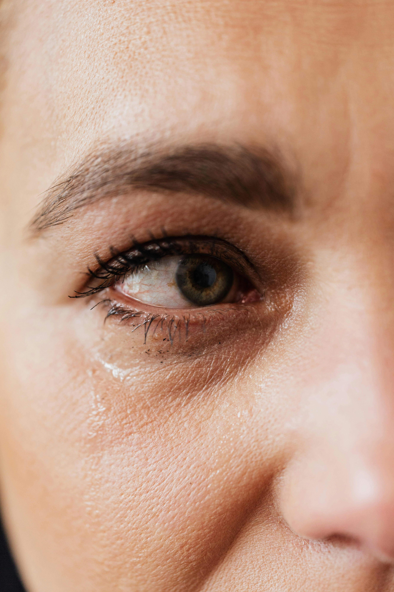
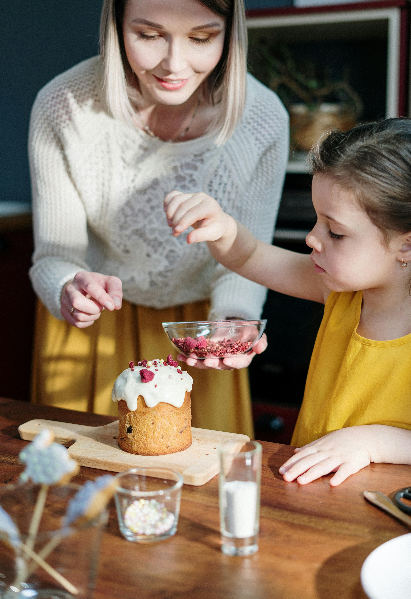

ICI
Et partout dans le royaume souverain
Dans les méandres du Maroc, derrière les murs qui retiennent leurs secrets, se cachent des destins brisés et des rêves évanouis. Les statistiques froides révèlent une réalité bouleversante : des milliers d'enfants, délaissés par la vie, errent dans l'ombre de l'abandon, victimes de la pauvreté, de la violence et de la maladie. Pourtant, au milieu de cette obscurité, des éclats d'espoir percent. Le gouvernement et les ONGs se tiennent aux côtés de ces enfants vulnérables, offrant un refuge et une lueur dans l'obscurité, dans une symphonie de compassion et de détermination. C'est dans cet élan de solidarité que se dessine le portrait d'une nation résolue à protéger et à élever ses enfants, dans un Maroc où l'amour triomphe sur l'abandon.


Fait second
Des raisons derrière ce phénomene
Les motifs derrière l'abandon d'enfants au Maroc sont divers, mais ils convergent souvent autour de la pauvreté, de la violence domestique, des maladies et des conflits familiaux. Selon les recherches de l'Organisation internationale pour les migrations (OIM), les statistiques révèlent une réalité particulièrement troublante : au Maroc, 75% des enfants abandonnés sont des filles, et parmi eux, 60% ont moins de 5 ans. Ces chiffres ne représentent pas simplement des données, mais des vies frappées par le dénuement et l'insécurité. Ces enfants, souvent laissés sans soins, sans éducation et sans protection, se retrouvent plongés dans des abîmes de vulnérabilité et de détresse, confrontés à des défis insurmontables pour leur jeune âge.
Fait dernier
Implication des institutions face au problème
Au Maroc, gouvernement et organisations non gouvernementales unissent leurs forces pour lutter contre le fléau de l'abandon d'enfants. Le gouvernement met en place des programmes de protection de l'enfance visant à prévenir les abandons et à fournir un soutien aux familles en difficulté. Ces initiatives incluent des mesures de lutte contre la pauvreté, des services de santé accessibles et des filets de sécurité sociale renforcés. En parallèle, des efforts sont entrepris pour renforcer les systèmes d'accueil familial et d'adoption, offrant ainsi aux enfants abandonnés la possibilité de trouver un foyer stable et aimant.
Les ONGs, quant à elles, occupent une place centrale dans cette lutte en offrant une assistance directe aux enfants abandonnés et à leurs familles. Elles déploient des programmes de soutien psychosocial, d'éducation et de soins de santé, répondant ainsi aux besoins immédiats et à long terme de ces enfants vulnérables. En outre, ces organisations jouent un rôle crucial dans la sensibilisation de la société à la problématique de l'abandon d'enfants, encourageant ainsi un changement d'attitude et une mobilisation collective pour garantir les droits et le bien-être de chaque enfant.

Et voilà pourquoi nous existons
Un centre pour porter les enfants
Plongé au cœur de Fès, le Centre Amal Enfant se présente comme un phare de bienveillance pour les enfants confrontés à l'abandon ou aux difficultés. Nous nous engageons passionnément à offrir bien plus qu'un simple abri : un foyer sécurisé où chaque enfant est accueilli avec amour et respect. Doté d'installations modernes et d'un personnel dévoué, notre centre assure une alimentation équilibrée, un logement confortable et un environnement propice à l'apprentissage et au développement.